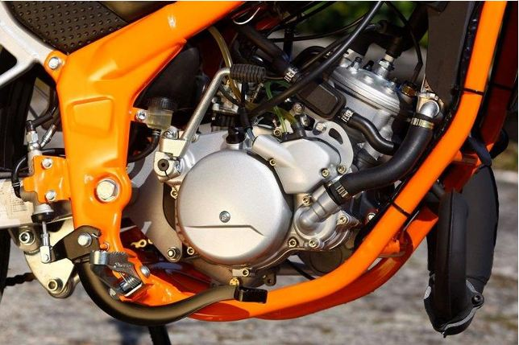

MOTORRA

Motorra Minarelli NG markakoa da, 50 c.c.-koa eta ur bidezko hozketa-sistema erabiltzen du. Zilindroen zikloa 2 denborakoa da, eta motorra 4,5 c.v. -eko indarra sortzen du.
| Zilindrada | 50 cc | Zilindroen zikloa | 2 T (2 tiempos) | Zilindro kopurua | 1 | Elikatzea | “Del Orto PHBN 16” karburadorea | Refrigerazio mota | Ura | Ibilbidearen diametroa | 40.3 mm x 39 mm | Erregaia | Berunik gabeko gasolina, 95-98 oktano | Kutsadura irizpideak | “Euro 2” arautegiaren barne |